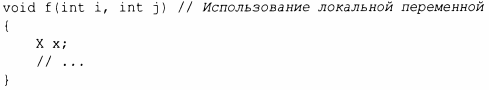

⇐13.2 Управление ресурсами 13.2.2 move() и forward()⇒
До сих пор рассматривавшиеся примеры заботились об объектах, определенных в области видимости, освобождая ресурсы, которые они захватывают, при выходе из области видимости. Но как насчет объектов, размещенных в динамической памяти? В заголовочном файле <memory> стандартная библиотека предоставляет два "интеллектуальных указателя", которые помогают управлять объектами в динамической памяти:
Основное использование "интеллектуальных указателей" - предотвращение утечек памяти, вызванных небрежным программированием. Например:
Здесь мы "забыли" удалить р при i<99 и j<77. unique_ptr же гарантирует, что его объект будет должным образом уничтожен независимо от того, как осуществляется выход из функции f() (с помощью исключения, выполнения return или достижения конца тела функции). По иронии судьбы мы могли бы решить проблему, просто не используя указатель и не используя new:
К сожалению, злоупотребление оператором new (а также указателями и ссылками), похоже, становится все более и более серьезной проблемой.
Однако, когда вам действительно нужна семантика указателей, unique ptr оказывается очень легким механизмом без накладных расходов памяти и времени по сравнению с правильным применением встроенного указателя. Его применение включает передачу объектов из динамической памяти в функции и их возврат из них:
unique _ptr представляет собой дескриптор отдельного объекта (или массива) почти так же, как vector представляет собой дескриптор последовательности объектов. Оба они управляют временем жизни других объектов (используя идиому RAII) и оба используют семантику перемещения, чтобы сделать возврат с помощью return простым и эффективным.
shared_ptr похож на unique_ptr, с тем отличием, что shared_ptr копируются, а не перемещаются. Интеллектуальные указатели shared _ptr для объекта совместно используют владение этим объектом; объект уничтожается, когда уничтожается последний из указывающих на него shared_ptr. Например:
Теперь файл, открытый конструктором fp, будет закрыт последней функцией, которая (явно или неявно) уничтожит копию fp. Обратите внимание, что f() или g() может запускать задание, сохраняющее копию fp, или сохранять копию, которая переживет user(), каким-либо другим способом. Таким образом, shared_ptr предоставляет разновидность сборки мусора, которая учитывает управление ресурсами на основе деструкторов объектов. Этот интеллектуальный указатель не является ни бесплатным, ни чрезмерно дорогостоящим, но он затрудняет прогнозирование времени жизни совместно используемого объекта. Используйте shared_ptr, только если вам действительно нужно совместное владение.
Создание объекта в динамической памяти с последующей передачей его адреса интеллектуальному указателю оказывается немного многословным и чревато ошибками, такими как забытая передача указателя в unique_ptr или передача в shared_ptr указателя
на что-то, что находится не в динамической памяти. Чтобы избежать таких проблем, стандартная библиотека (в заголовочном файле
Теперь р2 - это объект unique_ptr<S>, указывающий на объект, выделенный в динамической памяти, с типом S со значением {2, "Oz" s, 7. 62}.
Использование make shared () не просто более удобно, чем отдельное создание объекта с использованием new и его последующей передачей в shared_ptr, но и значительно более эффективно, поскольку в этом случае не требуется отдельное выделение памяти для счетчика использований, существенное для реализации shared_ptr.
При наличии unique_ptr и shared_ptr мы можем реализовать политику полностью "без голого new" (§4.2.2) во многих программах. Тем не менее эти "интеллектуальные указатели" концептуально все еще являются указателями, а следовательно, являются лишь моим вторым выбором для управления ресурсами - после контейнеров и других типов, которые управляют ресурсами на более высоком концептуальном уровне. В частности, shared_ptr сами по себе не предоставляют никаких правил, по которым их владельцы могут читать и/или записывать совместно используемый объект. Простого устранения проблем управления ресурсами недостаточно для решения проблем гонки данных(§ 15.7) и других вопросов.
Когда мы используем интеллектуальные указатели (например, unique_ptr), а не дескрипторы ресурса с операциями, разработанными специально для данного ресурса (такие, как vector или thread)? Неудивительно, что ответ звучит как "Когда нам нужна семантика указателя".
Нам не нужно использовать указатель для возврата коллекции объектов из функции; контейнер, который является дескриптором ресурса, сделает это просто и эффективно (§5.2.2).